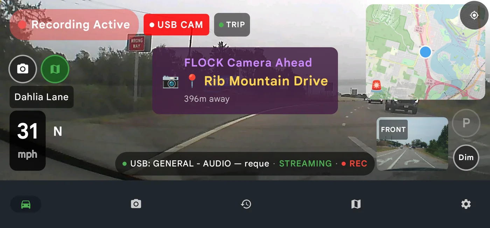
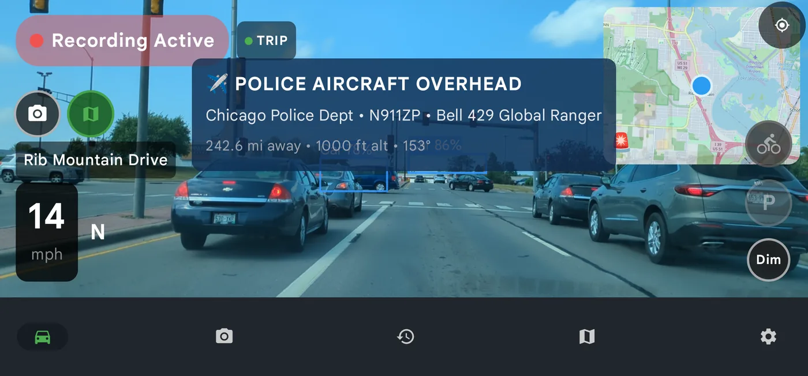

Do Radar Detector Apps Work? What a Phone Catches, and What It Can’t
Short answer: no radar detector app can detect radar. There is no radar receiver in any phone, so nothing in the Play Store can hear a K-band or Ka-band gun. The question hides a second one worth asking though, because a hardware radar detector cannot see a speed camera, a red light camera or a Flock plate reader either. Each tool is blind to most of what actually catches drivers in 2026.
A radar detector has one job: notice a police radar beam that is already pointed at your car. It does that job well, and it has done it since 1968. The problem is that most of the ways a driver gets caught today produce no radar beam at all.
A speed camera does not emit K-band. A red light camera does not either. A licence plate reader on a pole logs your car in complete silence. And a state patrol plane timing your car between two painted lines on the highway is using a stopwatch, not a radar gun. There is nothing there for a detector to hear.
DriveSight approaches the problem from the other end. Instead of listening for a beam, it maps where enforcement already is, on the ground and in the air. Here is exactly how each layer works, and where the honest limits are.
First, the part most apps in this category dodge
A phone cannot detect radar. There is no radar receiver in any Android handset, and no software update will add one. If an app in the Play Store implies it can hear a Ka-band gun, it is selling you something that is not physically possible.
So DriveSight does not claim to be a radar detector, and this page is not going to pretend otherwise. What a connected phone is genuinely good at is knowing things in advance. Cameras have fixed addresses. Plate readers are bolted to poles. Police aircraft broadcast their own position and identity continuously. Patrol cars get reported by the drivers who just passed them.
All of that is knowable before you arrive, which is a better place to be than learning a beam has already hit you. Here is how the two approaches actually compare.
| Threat | Hardware radar detector | DriveSight |
|---|---|---|
| Instant-on radar gun | Detects it, often as the reading is already taken | No. A phone has no radar receiver |
| Laser / LIDAR | Detects it, usually too late to matter | No |
| Fixed speed camera | Silent. Nothing to detect | Mapped and announced ahead |
| Red light camera | Silent | Mapped and announced ahead |
| ALPR / Flock reader | Silent | Mapped, with operator and facing direction |
| Reported patrol car | Only if its radar is on and aimed | Community reports, marked visible or hidden |
| Aircraft speed enforcement | Structurally blind. No signal exists | Tracked over public ADS-B |
Do radar detectors detect speed cameras, red light cameras or Flock readers?
No, and this is the gap that costs most drivers money. A radar detector works by receiving a transmission. A fixed speed camera does not transmit anything at your car, it photographs you. A red light camera is triggered by a loop buried in the asphalt. A Flock plate reader just takes a picture of your plate as you pass.
None of those emit a signal for a detector to receive, so the detector stays silent right up until the ticket arrives in the post. The only defence against enforcement that does not transmit is knowing where it already sits, which is a mapping problem rather than a radio one. That is the half DriveSight handles.
On the ground: three separate layers
Community-reported police
The first layer is other drivers. Reports come in tagged by type, and DriveSight keeps that distinction rather than flattening everything into a generic dot. A cruiser sitting in plain sight on the shoulder is a different situation from one tucked behind an overpass pillar, so the map labels them separately as visible, hidden, or simply reported when nobody specified.

A hidden police report surfacing on the drive screen, with the dashcam still recording
Reports decay and can be flagged as false by drivers who pass the same spot and see nothing, which keeps a stale report from haunting an intersection for days. Where the same location gets reported repeatedly, DriveSight clusters those points into a hotspot once they fall within about 100 metres of each other. A hotspot is a more useful signal than any single report, because it tells you this is a spot police actually work, not a one-off.
Fixed cameras, 336,000 of them
The second layer needs no crowd at all, because fixed enforcement does not move. DriveSight ships with more than 336,000 mapped speed camera and red light camera locations, with dedicated data sets for regions that publish good public records, including the UK and France.
These are the tickets that hardware detectors never prevent. A speed camera gives off nothing to detect. The only defence is knowing the camera is there, which is a solved problem the moment somebody writes the location down.
Licence plate readers
The third layer is the one most drivers have never thought about. Flock Safety and similar ALPR cameras photograph and log every plate that passes, building a searchable record of vehicle movements. They are not speed enforcement, and they will never write you a ticket, but plenty of people would simply like to know where they are.

A plate reader called out by street and distance, while a second USB camera records in the corner
That data comes from the community-maintained ALPR layer in OpenStreetMap, which is kept current by contributors and the DeFlock project. Because it is mapped rather than scraped from a frozen list, it carries useful detail per camera: who operates it, and which direction it faces. A reader pointed away from your lane matters a lot less than one pointed at it. We wrote more about how these cameras work in Flock Safety ALPR cameras explained.
How early the warnings arrive
Alert distance is not a single fixed number, because 200 metres of warning means something different at noon than it does at midnight. In daylight the first alert lands around 1,000 metres out, with closer reminders at 500 and 200 metres. After dark those thresholds stretch to 1,500, 750 and 300 metres, since both your sight lines and your stopping distance are worse.
In the air: the part a radar detector cannot do
This is where the two approaches stop overlapping entirely.
Almost every aircraft in the sky continuously broadcasts its identity, position, altitude and heading over ADS-B, an unencrypted signal designed for air traffic safety. It is public by design. Flight tracking websites have rebroadcast it for years, and anyone with a cheap receiver can pull it out of the air themselves.
DriveSight polls a public ADS-B feed for aircraft near your GPS position every 30 seconds. Each aircraft carries a unique ICAO hex code, and the app checks every one of them against a watchlist of roughly 2,700 known law enforcement and government aircraft that ships inside the app. That list comes from the open source plane-alert-db project, which catalogues police helicopters, fixed-wing surveillance aircraft, and government airframes along with their operators.

A police aircraft alert mid-drive: operator, tail number, model, distance and altitude, with the dashcam still rolling
When a match turns up inside your alert radius, the banner tells you who it belongs to, its tail number, the aircraft model, how far away it is, how high it is flying, and which way it is heading. You can look that tail number up in the FAA registry yourself and confirm it.
Two details keep the feature usable rather than annoying. The radius is yours to set, from 5 miles if you only want to hear about aircraft genuinely overhead, out to 250 miles if you would rather watch the whole region. And the same aircraft will not alert you twice inside five minutes, so a helicopter orbiting a scene nearby announces itself once instead of every thirty seconds.
Ground and air, on the phone already in your car
DriveSight is a full dash cam with police aircraft tracking, 336,000+ camera alerts, ALPR locations, crash detection and parking mode. No extra hardware, no windshield clutter.
Download DriveSight FreeWhat is aerial speed enforcement, and why does it beat radar detectors?
Aerial speed enforcement is police aircraft traffic enforcement: an officer in a plane or helicopter measures your speed from the air and radios a patrol car on the ground to pull you over. It is worth being specific about how it works, because it is the clearest case for watching the sky.
Aircraft speed enforcement generally does not involve radar. An observer in the plane starts a timer as your car crosses one painted marker on the shoulder and stops it at the next. The distance between those markers is known precisely, so the arithmetic gives your average speed. A radio call sends a ground unit ahead to make the stop.
Nothing is ever aimed at your vehicle. No radar, no laser, no signal of any kind. The most sophisticated detector on the market will sit there silent while your speed is being measured from 3,000 feet, and the first hint of trouble is a cruiser pulling out a mile later.
The aircraft is the only detectable part of that operation, and it is broadcasting the whole time. If you want the longer version with real alerts caught on camera, we documented three of them in the police aircraft tracker write-up.
What this looks like while you are driving
If you are still weighing up which app to trust, the companion piece separates the three products that all get called a police radar app, and gives a quick test for spotting a fake: is there a police radar app that actually works?
If what you actually wanted was an app to detect police on the highway, this is the part that answers it. All of it runs on one screen. DriveSight is recording as a dash cam the entire time, so the alerts overlay a video that is already being saved. Ground alerts appear as you approach, aircraft alerts drop in when something matching enters your radius, and both are spoken aloud so you are not reading your phone.
For what the category costs and the Android settings that decide whether alerts survive a drive, see police radar detector app for Android.
Android Auto users get the same police layer on the head unit, which we covered in police alerts on Android Auto. And if you want to see how DriveSight stacks up against the dedicated alert apps, there is a comparison in the best radar detector apps for 2026.
A note on what this is for
Knowing where cameras and patrols are tends to make drivers slow down and stay slow, which is the point of enforcement in the first place. Use it to drive more carefully in the places that need it, not to speed between them. Speed limits still apply whether or not anyone is watching.
Frequently Asked Questions
Do radar detector apps work?
Not the way the name suggests. No phone contains a radar receiver, so no app can detect a K-band or Ka-band radar gun, and any app implying otherwise is misleading you. What an app does well is map enforcement that has a fixed or broadcast position: speed cameras, red light cameras, ALPR plate readers, driver-reported patrol cars, and law enforcement aircraft. DriveSight covers those four and is upfront that it is a mapping and alerting app, not a radar receiver.
Do radar detectors detect speed cameras?
No. A fixed speed camera photographs your car rather than transmitting at it, so there is no signal for a detector to receive. The same is true of red light cameras, which are usually triggered by a sensor loop in the road surface. The only reliable defence is knowing the camera location in advance, which is why DriveSight ships more than 336,000 mapped camera locations.
Do radar detectors detect Flock cameras?
No. Flock Safety readers and similar ALPR cameras simply photograph your licence plate as you pass. They emit nothing a detector can pick up. DriveSight maps them instead, using the community-maintained OpenStreetMap ALPR layer, and shows each camera's operator and the direction it faces.
Is there an app to detect police on the highway?
DriveSight alerts you to community-reported patrol cars ahead on your route, labelled as visible, hidden or simply reported, alongside mapped cameras and plate readers. Reports can be flagged as false by other drivers so stale ones fade, and repeatedly reported spots become hotspots. It cannot detect an officer who has not been reported and is not running anything that broadcasts.
How does DriveSight detect police aircraft?
Aircraft broadcast their identity and position continuously over ADS-B, an unencrypted public signal. DriveSight checks a public ADS-B feed around your GPS position every 30 seconds and matches each aircraft's ICAO hex code against a bundled watchlist of roughly 2,700 known law enforcement and government aircraft. A match inside your radius produces an alert with the operator, tail number, model, altitude, distance and heading.
What is aerial speed enforcement?
It is police aircraft traffic enforcement: an observer in a plane or helicopter times your car between two markers painted on the highway shoulder, calculates your average speed from the known distance, and radios a ground unit to make the stop. Because no radar or laser is ever aimed at your vehicle, a radar detector has nothing to receive and stays silent throughout.
How far ahead do ground alerts arrive?
About 1,000 metres for the first daylight warning, then closer reminders at 500 and 200 metres. After dark the thresholds widen to 1,500, 750 and 300 metres, because visibility and stopping distance are both worse. The aircraft radius is separate and you set it yourself, anywhere from 5 to 250 miles.
Is tracking police aircraft legal?
Yes. ADS-B is broadcast unencrypted by the aircraft themselves and is public data that flight tracking services have rebroadcast for years. DriveSight cross-references those public feeds against public registration records. Nothing is intercepted or decrypted.
Does all this run while the dashcam records?
Yes. Alerts overlay the recording view, and the aircraft check reuses the GPS fix the dashcam already maintains, so the extra battery cost is small. Your phone should be on car power while recording in any case.
Radar detectors watch the road. DriveSight watches the sky too.
Police aircraft alerts, 336,000+ camera locations, ALPR readers, a live police map, crash detection and a full dash cam, in one free download.
Download DriveSight Free